One Roof
Kurulum Kılavuzu
Bu rehberi adım adım takip ederek Google Sheets şablonunu içe aktaracak, script'i kuracak ve sistemi kullanıma hazır hale getireceksin.
İndirme çalışmıyorsa sayfanın paylaşıldığı kaynaktan dosyaları al.
Gereksinimler
Kuruluma başlamadan önce aşağıdakilere sahip olduğundan emin ol:
oneroof_template.xlsxoneroof_script.txtExcel Dosyasını İçe Aktar
sheets.google.com adresini aç ve yeni bir boş spreadsheet oluştur. Ardından aşağıdaki adımları takip et:
-
1Üst menüden Dosya → İçe Aktar'a tıkla.
-
2Açılan pencerede Yükle sekmesine geç ve
oneroof_template.xlsxdosyasını sürükle-bırak ya da seç. -
3İçe aktarma konumu olarak "Elektronik tabloyu değiştir" seç.
-
4"Verileri İçe Aktar" butonuna tıkla. Sayfa yenilenir.
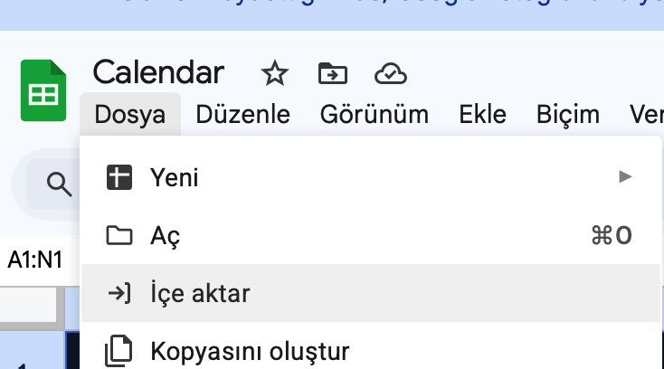
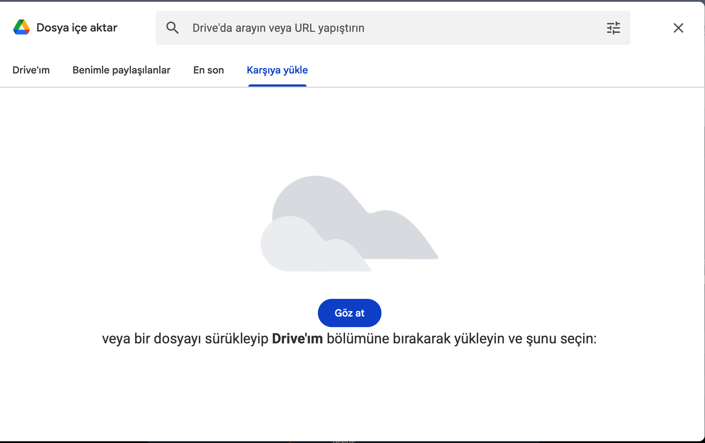
Bölge Ayarını ABD Yap
-
1Üst menüden Dosya → Ayarlar'a tıkla.
-
2Genel sekmesinde Yerel Ayar dropdown'ını bul.
-
3Listeden Amerika Birleşik Devletleri'ni seç.
-
4"Ayarları Kaydet ve Yeniden Yükle"'ye tıkla. Sayfa yenilenir.
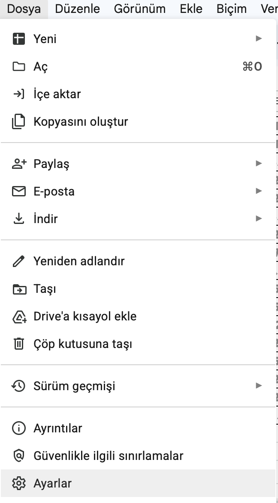
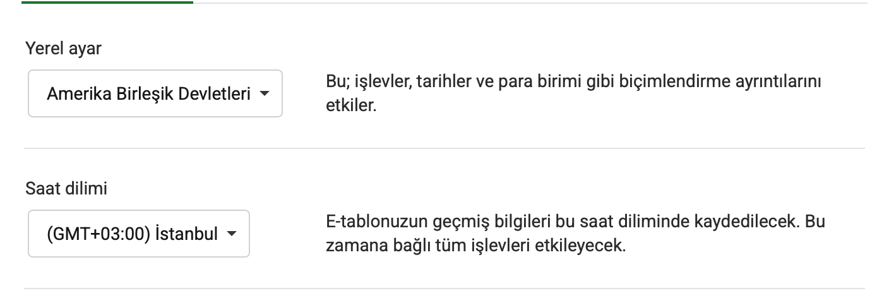
#REF! Hataları Görüyorum, Sorun mu?
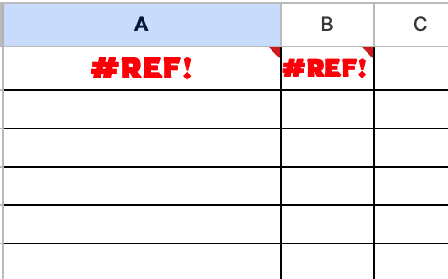
Şimdilik bu hataları görmezden gel ve bir sonraki adıma geç.
Apps Script Editörünü Aç
-
1Üst menüden Uzantılar'a tıkla.
-
2Açılan menüden Apps Komut Dosyası'na tıkla.
-
3Yeni bir sekme açılır. Script editörü göreceksin — içinde varsayılan bir
Code.gsdosyası bulunur.
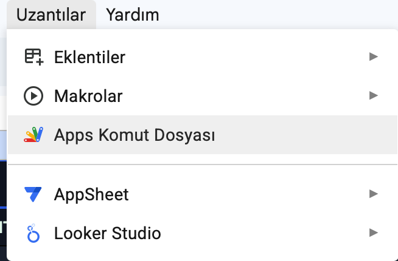
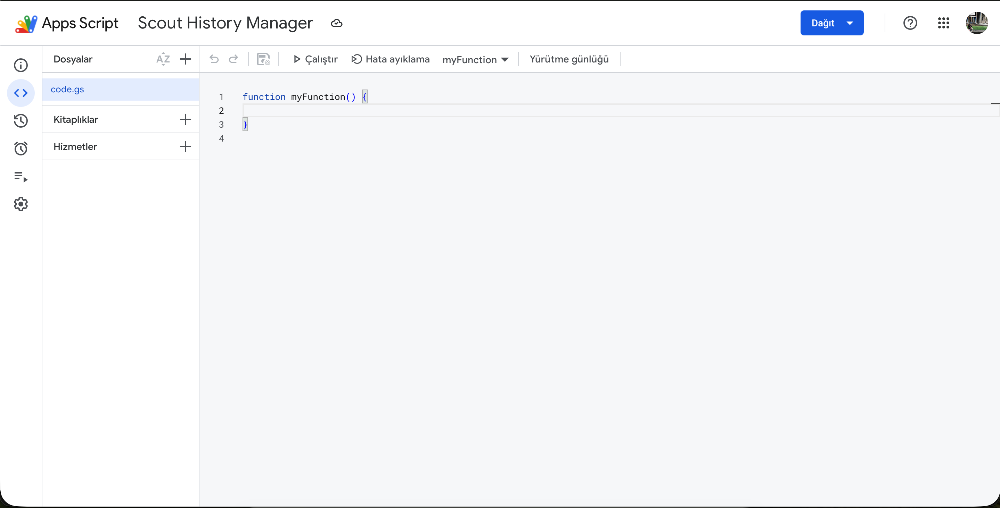
Script Kodunu Yapıştır
-
1Editördeki mevcut kodu tümünü seç (Ctrl + A) ve sil.
-
2
oneroof_script.txtdosyasını bir metin editöründe aç. İçeriğin tamamını kopyala (Ctrl + A, Ctrl + C). -
3Script editörüne geri dön ve yapıştır (Ctrl + V).
-
4Kaydet: Toolbar'daki 💾 disket simgesine tıkla ya da Ctrl + S bas.
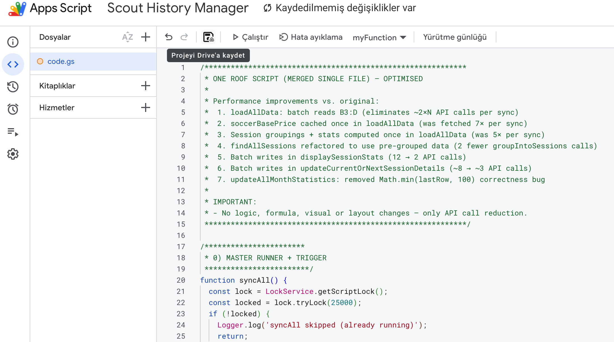
SET Sayfasını Doldur
Google Sheets'e geri dön ve SET sayfasını aç. Aşağıdaki hücreleri kendi bilgilerinle doldur:
| Hücre | Ne Girilecek | Örnek |
|---|---|---|
| [İSİM HÜCRESİ] | Kullanıcı adın / görünen ismin | Ahmet K. |
| [KAYNAK SHEET ID] | Kaynak veri spreadsheet'inin ID'si | 1BxiMVs0… |
| [FİYAT SHEET ID] | Fiyat tablosu spreadsheet'inin ID'si | 1CyiNWt1… |
| B50 | Kullanıcı kategorin (1–9 arası) | 3 |
https://docs.google.com/spreadsheets/d/BURASI_ID/edit#gid=0
İki / arasındaki uzun alfanümerik kısmı kopyala.
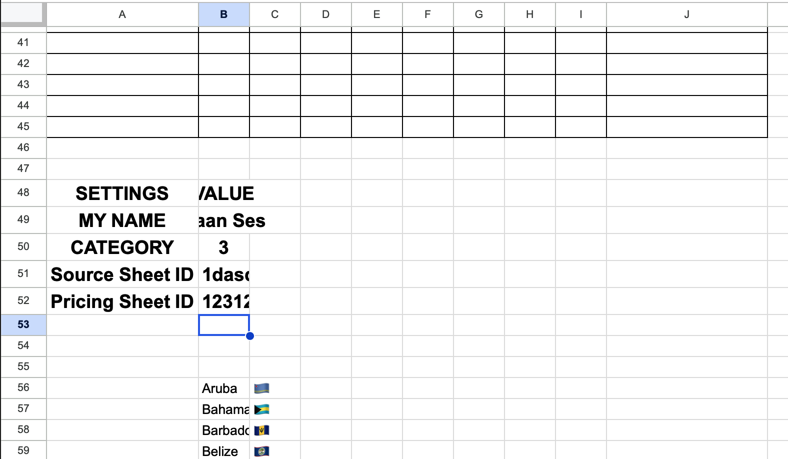
setupSyncAllTrigger'ı Çalıştır
Script editörüne geri dön. Bu adımda otomatik 5-dakika trigger'ını kuracağız.
-
1Toolbar'daki fonksiyon seçici dropdown'ından
setupSyncAllTriggerseç. -
2▶ Çalıştır butonuna tıkla.
-
3Hemen "Yetkilendirme gerekli" diyalogu açılacak → Bir sonraki adıma geç.
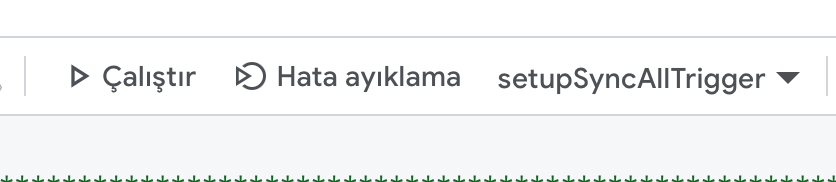
Google İzin Uyarılarını Geç
"Yetkilendirme gerekli" diyalogunda "İzinleri İncele" butonuna tıkla. Google hesabı seçim ekranı açılır.
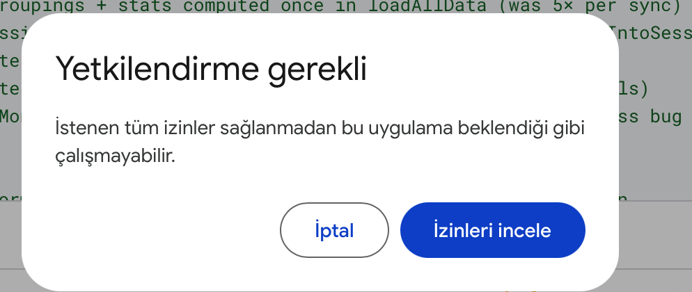
Kırmızı uyarı ekranı açılır. Bu tamamen beklenen bir durum — geri gitme veya iptal etme. Sayfanın altındaki küçük "Gelişmiş" linkine tıkla.
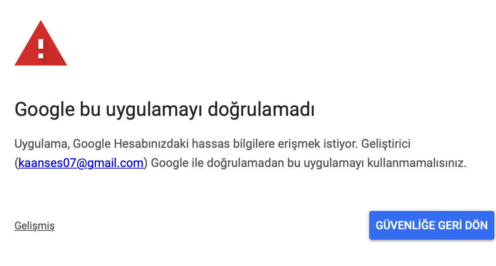
"Gelişmiş"e tıklayınca yeni bir link belirir. Bu linke tıkla:
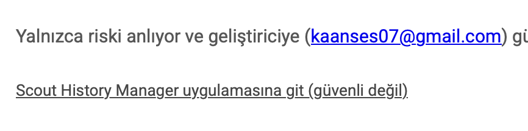
İzin listesi ekranı açılır. "Tümünü seç" kutucuğuna tıklayarak tüm izinleri işaretle.
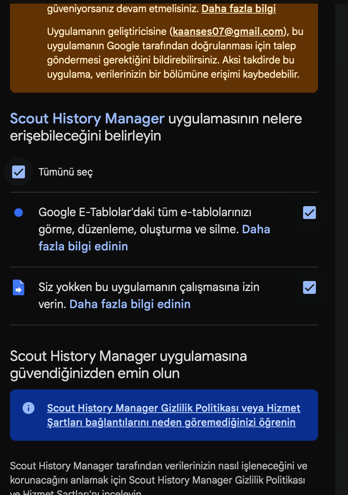
Tümünü seçtikten sonra sayfanın altındaki mavi "İzin Ver" butonuna tıkla. Script artık çalışmaya hazır.
syncAll'ı Çalıştır
setupSyncAllTrigger başarıyla tamamlandı.
Şimdi ilk senkronizasyonu elle başlatacağız.
-
1Fonksiyon dropdown'ından
syncAllseç. -
2▶ Çalıştır'a tıkla. Editörün altında "Yürütme günlüğü" açılır.
-
3İşlem bittikten sonra günlükte "syncAll COMPLETE" mesajını göreceksin.
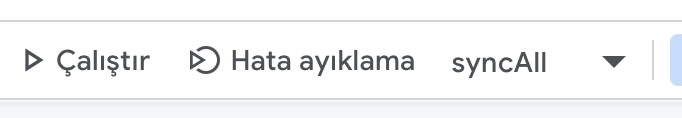
Butonlara Script Ata
Dash sayfasındaki Total Kazanç ve Aylık Projeksiyon hücrelerine tıklanınca ilgili fonksiyonun çalışması için her birine bir script bağlaman gerekiyor. İki hücre için aynı adımları uygula.
-
1Dash sayfasında Total Kazanç hücresine sağ tıkla.
-
2Menüden "Komut Dosyası Ata"'ya tıkla.
-
3Açılan alana tam olarak şunu yaz:
toggleEarnings -
4Onayla / Tamam'a tıkla.
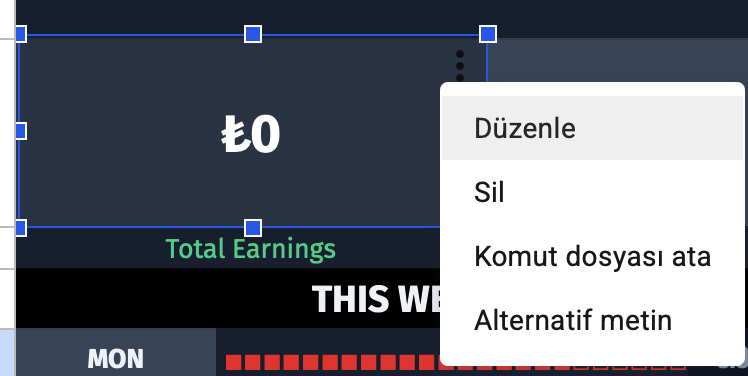
Aynı adımları Aylık Projeksiyon hücresi için tekrarla, fakat bu sefer şunu yaz:
toggleProjection
Hazırsın!
Kurulum tamamlandı. Artık spreadsheet'e dön — Dash sayfasında dashboard verilerini görebilirsin.
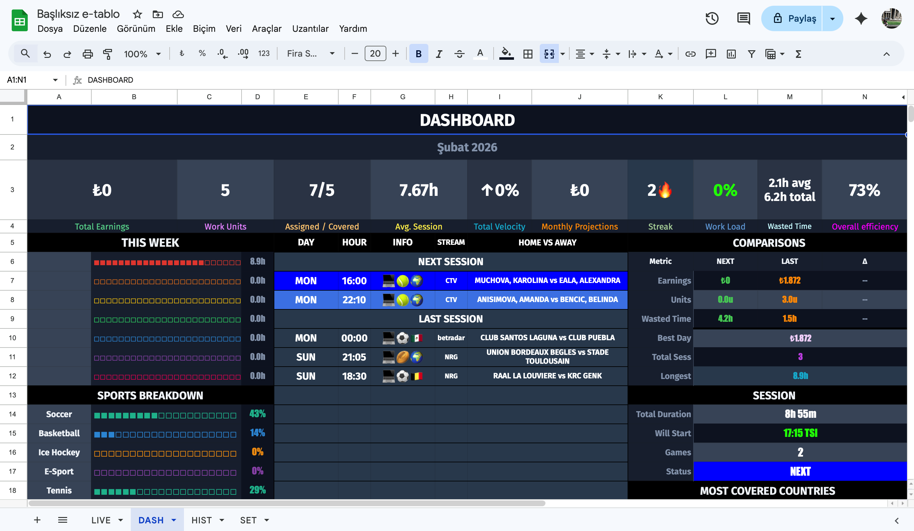
Dashboard Rehberi
Her hücrenin ne gösterdiği ve nasıl hesaplandığı
Ana Metrik Satırı (Row 3)
Bu ayın tüm Covered ve Removed statüsündeki oyunlardan elde edilen toplam kazanç. Hist sayfasındaki ay başlığı formülünden okunur — bu yüzden manuel eklenen backup oyunlar da dahildir.
SUMIFS(K:K, L:L, "Covered") + SUMIFS(K:K, L:L, "Removed")
💡 Hücreye tıklanarak gizlenebilir / gösterilebilir (toggleEarnings).
Kazancın, futbol maçının taban fiyatına oranı. 1 WU = 1 futbol maçı fiyatı kadar kazanç. Her spor fiyatı 0.25 WU katı olarak tasarlanmıştır — bu sayede float hatalarını önlemek için en yakın 0.25'e yuvarlanır.
ROUND((Kazanç ÷ SoccerBasePrice) × 4) ÷ 4
📌 SoccerBasePrice, SET sayfasındaki kullanıcı kategorisinden (B50 hücresi) otomatik alınır.
Sol taraf bu ay Hist'teki toplam maç sayısı, sağ taraf Covered + Removed olanların sayısı. F3 hücresi bunun yüzdesini gösterir.
Bu ayki tüm seans sürelerinin ortalaması (saat cinsinden). Bir seans birden fazla maç içerebilir — bkz. Seans Mantığı.
Dünkü ortalama seans kazancının, bu ayki ortalamaya göre ne kadar farklı olduğunu gösterir. ↑20% → dün normalden %20 daha iyi, ↓15% → daha düşük.
((Dünkü Ort. − Aylık Ort.) ÷ Aylık Ort.) × 100
Dün hiç seans olmadıysa -- gösterir.
Ay sonuna kadar gidersen ne kadar kazanacağını hesaplar. Bugüne kadarki günlük ortalamayı ayın tamamına uzatır.
(Kazanç ÷ GeçenGün) × AydakiToplamGün
💡 Gizlenebilir / gösterilebilir (toggleProjection).
Covered statüsündeki maçlarla kaç gün üst üste çalışıldığını gösterir. Bugün henüz maç yoksa dün de sayılmaya başlar. Bir gün boşluk serisi sıfırlar.
Çalışma yoğunluğunu simüle eden kümülatif bir birikim modeli. Çalışılan günler yorgunluğu artırır, dinlenilen günler hızla düşürür.
Renk: yeşil = dinlenmiş, pembe = yorgun, kırmızı = aşırı yüklenmiş (%70+).
Bir seanstaki maçlar arasındaki bekleme sürelerinin ortalaması + aylık toplamı.
Aktif çalışma süresi ÷ toplam seans süresi. Yüksek = az bekleme.
(süre − boşluk) ÷ süre × 100
Seans Mantığı
Script, maçları otomatik olarak seanslara gruplar. Birden fazla maç arasındaki boşluk ≤ 6 saat ise aynı seans sayılır.
Seans İstatistik Paneli (Sağ Blok)
Görsel Paneller
Pzt–Paz için o günkü toplam seans süresi. ■■■□□□ çubuk, saati temsil eder (her ■ = 30 dk, maksimum 24 kutu = 12 saat).
Bu ayki Covered + Pending maçların spor türüne göre yüzde dağılımı. Soccer, Basketball, Tennis ve 9 kategori gösterilir. E-Sport maçları 0.25 ağırlıkla sayılır (çeyrek maç eşdeğeri).
En çok maç yapılan 6 ülke, bayrak emojisi + bar + yüzde ile gösterilir. Küresel (🌍🌎🌏) bayraklar sayıma dahil edilmez.
Sorun Giderme
Sık karşılaşılan sorunlar ve çözümleri
●
"Script function not found" hatası
▼
●
#REF! hataları kurulum sonrası devam ediyor
▼
●
Dashboard boş veya güncellenmedi
▼
syncAll'ı tekrar çalıştır. İlk çalıştırma bazen tamamlanmadan timeout olabilir — ikinci çalıştırmada genelde düzelir.
●
"Exceeded maximum execution time" hatası
▼
syncAll'ı tekrar çalıştır — kaldığı yerden devam eder.
●
5 dakikada bir güncelleme çalışmıyor
▼
syncAll trigger'ı görünmüyorsa, setupSyncAllTrigger'ı tekrar çalıştır.
●
İzin ekranını kapattım, yeniden açmak istiyorum
▼
setupSyncAllTrigger'ı tekrar çalıştır. İzin henüz verilmemişse "Yetkilendirme gerekli" diyalogu tekrar açılır.